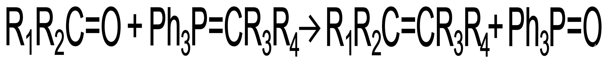
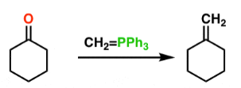
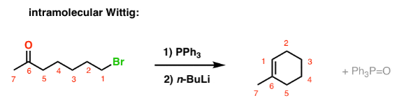
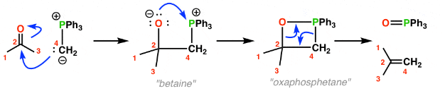

The Wittig reaction is an important organic reaction used for the preparation of alkenes
by reacting aldehydes or ketones with phosphorus ylides (Wittig reagents).
In this reaction, the carbonyl oxygen of an aldehyde or ketone is replaced by a carbon group
from the ylide, resulting in the formation of a carbon–carbon double bond.
The Wittig reaction is widely used in organic synthesis because it provides a convenient method
for alkene preparation with control over the position of the double bond.

Benzaldehyde reacts with methylene triphenylphosphorane to produce styrene.


1. Formation of phosphorus ylide from phosphonium salt.
2. Nucleophilic attack of ylide on carbonyl carbon.
3. Formation of betaine intermediate.
4. Cyclic oxaphosphetane intermediate is formed.
5. Decomposition gives alkene and triphenylphosphine oxide.
